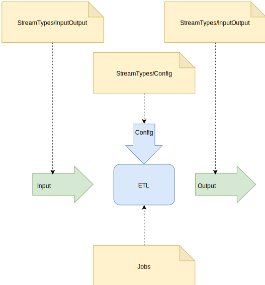

Define an ETL process
The ETL itself
An Etl process is a method that take one parameter with the type Paillave.Etl.Core.Streams.ISingleStream<>.
Ideally it should be a static method for it to be directly executable by the debugger tool. It should be placed in a specific namespace Jobs
The generic type of the parameter is the type that contains the starting point value of the ELT process. It will be issued only once into the input stream.
Stream types used by the process
Every not anonymous type that is involved in a stream should be in a specific namespace StreamTypes. By defining ETL processes you will try to use as much anonymous types as possible. Ideally, since you want it to be as less confusing as possible you want to make a distinction between ETL config types and input/output types. ETL config types are the entry point of your process whereas input/output types are values that directly the representation of what is read or written by the ETL process.
Namespaces structure

Source code example
using Paillave.Etl.Extensions;
using Paillave.Etl.Core.Streams;
using Paillave.Etl.Recipes.DefineProcess.StreamTypes.Config;
namespace Paillave.Etl.Recipes.DefineProcess.Jobs
{
public class SimpleJob
{
public static void Job1(ISingleStream<SimpleConfigStreamType> config)
{
config.ThroughAction("show message", i => i.Messages.Add($"{100 / i.Divider} times hello world!"));
}
}
}